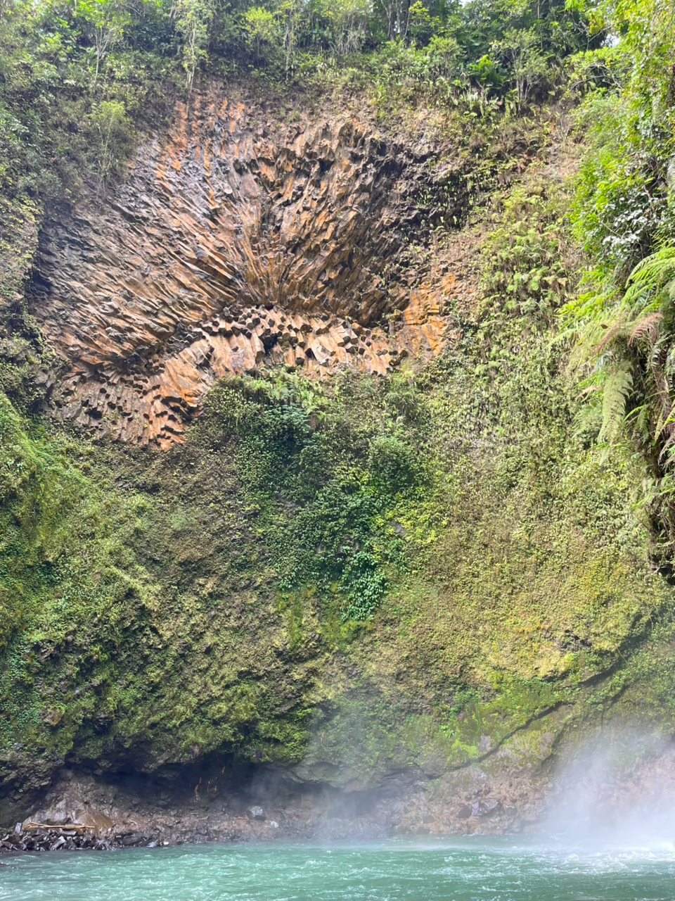
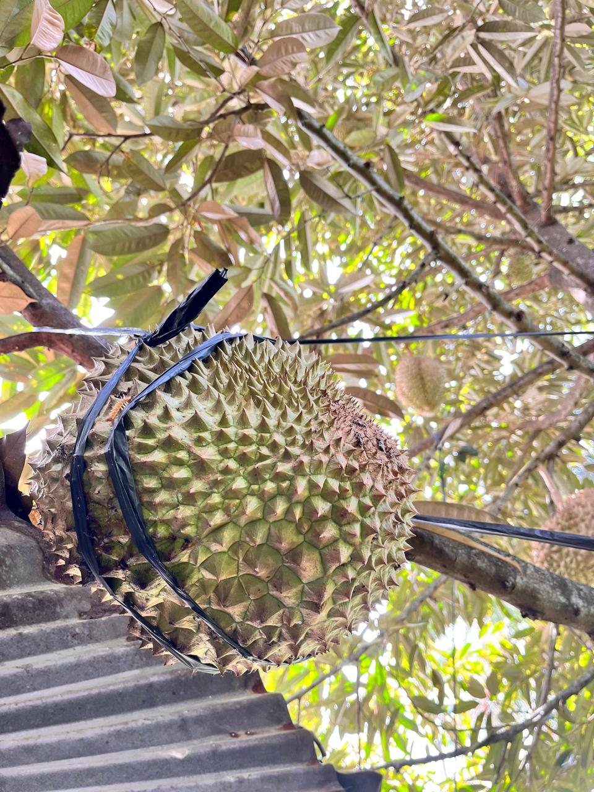

Selamat Datang di Desa Selelos
Jelajahi surga tersembunyi dengan keindahan alam pegunungan, air terjun kristal, dan keramahan budaya lokal yang tak terlupakan.
Petualangan Menanti
Lihat Semua arrow_forward
Destinasi Unggulan
Air Terjun
Air Terjun Tiu Saong
Pesona air terjun yang jatuh dari tebing tinggi di tengah hutan rimbun.

Cita Rasa Khas
Durian Selelos
Dikenal sebagai sentra durian terbaik di wilayah ini, Desa Selelos menawarkan pengalaman "Agrowisata Durian" langsung dari pohonnya. Nikmati durian dengan tekstur creamy dan rasa manis-pahit yang otentik sambil menikmati udara pegunungan yang sejuk.
- check_circle Panen Langsung di Kebun
- check_circle Beberapa Varian Unggulan
- check_circle Budidaya
Siap untuk Berpetualang?
Rencanakan kunjungan Anda sekarang dan rasakan harmoni antara alam dan tradisi di Desa Wisata Selelos.